01
Мастера, которым доверяют
Слушаем ваши пожелания и объясняем каждый этап процедуры.
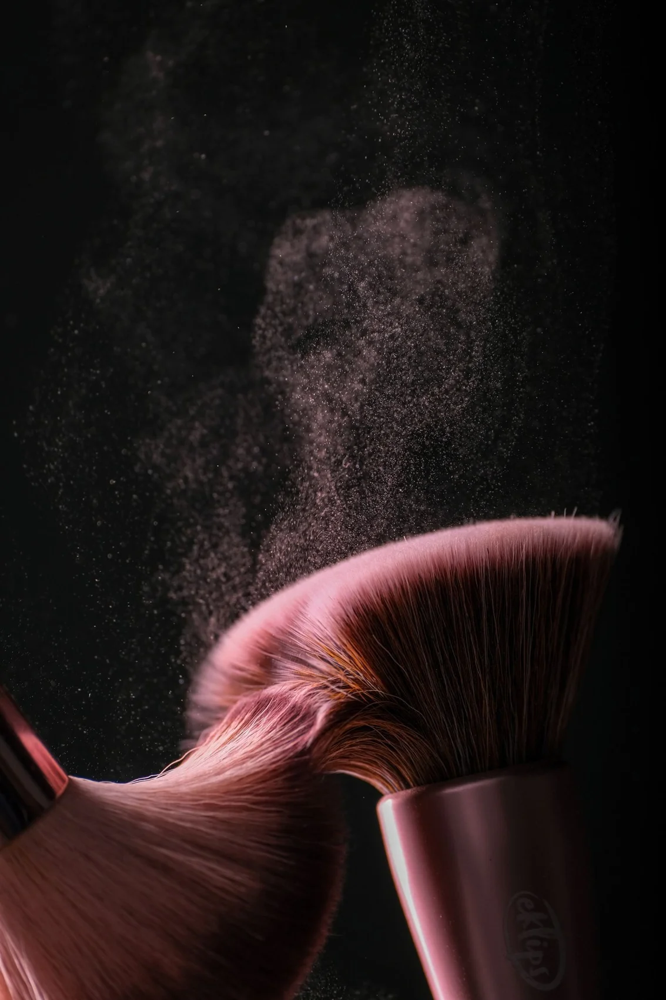
Студия красоты / Москва
Красота, которая
чувствуется.
Стрижки, цвет, маникюр и уход в одном пространстве.
Выбрать услугу ↗О СТУДИИ
Мы верим, что уход за собой — не роскошь, а маленький ритуал, который делает день лучше.
Слушаем ваши пожелания и объясняем каждый этап процедуры.
Волосы, ногти, брови и уход в одном уютном пространстве.
Оставляем достаточно времени на качественную и спокойную работу.
Соблюдаем стандарты обработки инструментов и рабочего места.
Сравните процедуры и цены в меню студии.
УСЛУГИ И РИТУАЛЫ
Волосы, ногти, лицо и образ.
Выберите свою процедуру.
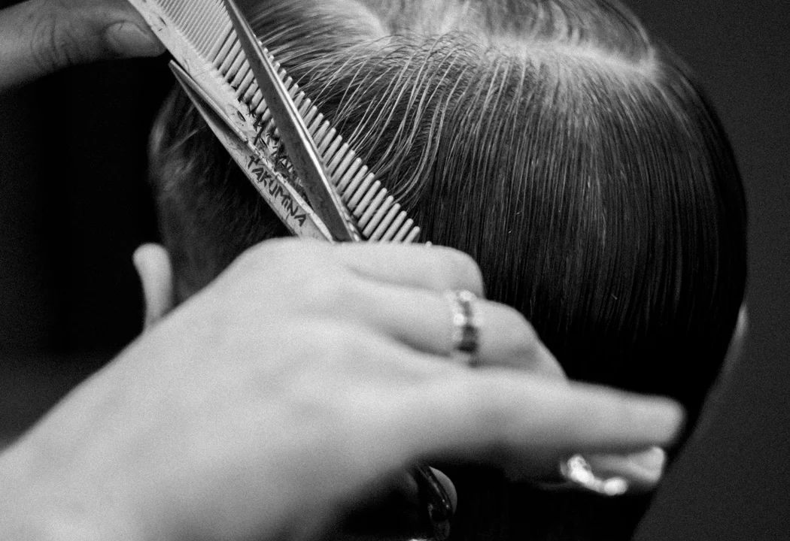
ВОЛОСЫ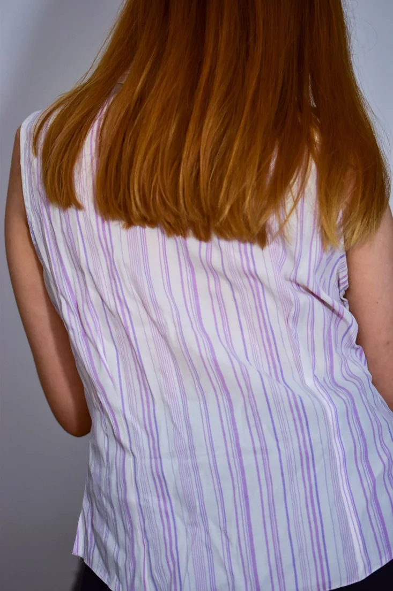
ВОЛОСЫ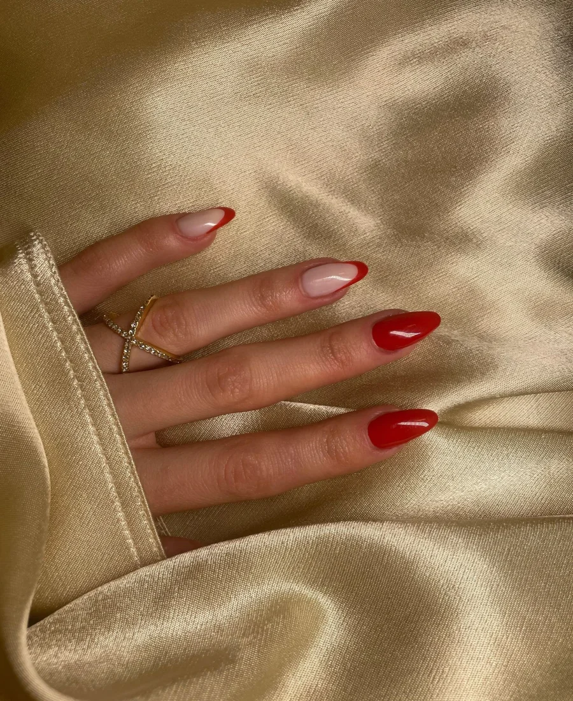
НОГТИ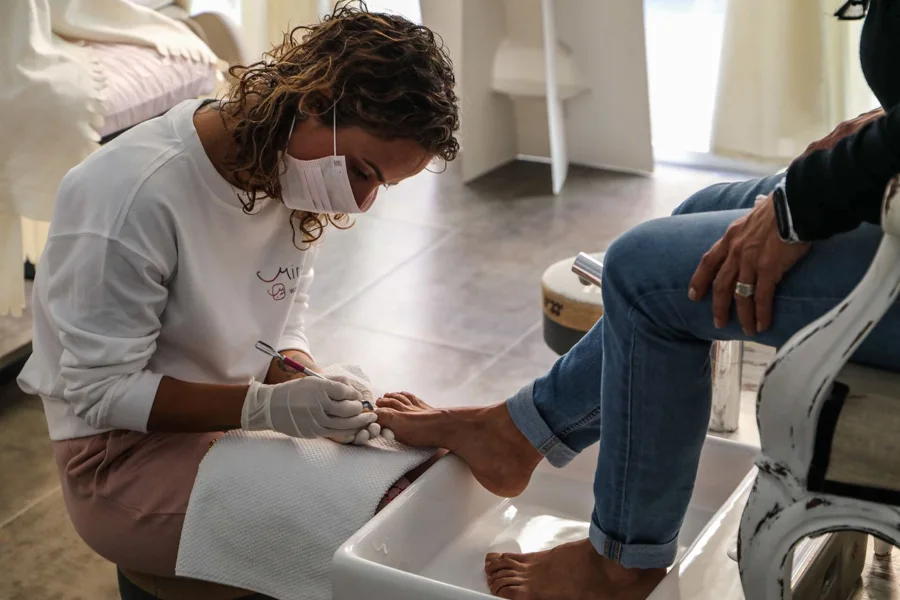
НОГТИ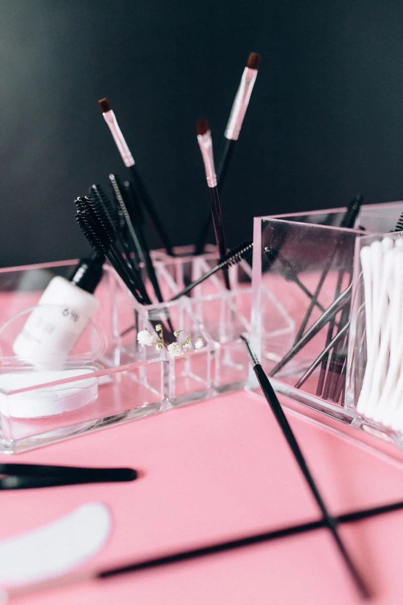
ЛИЦО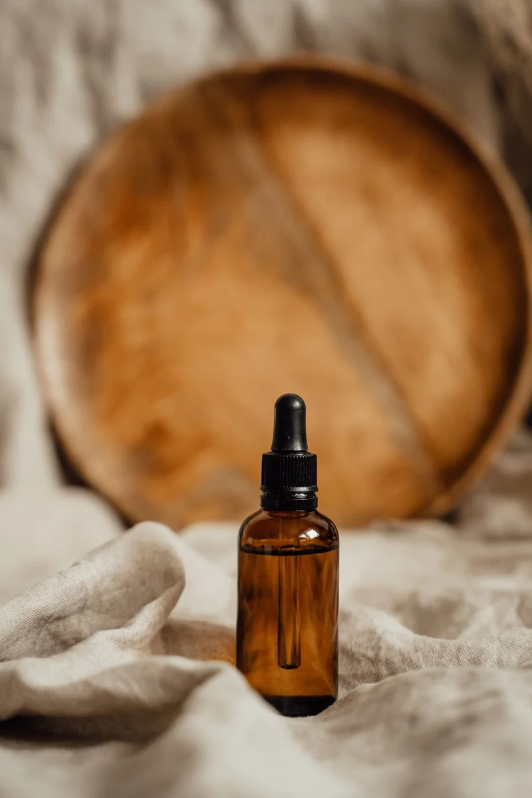
ЛИЦО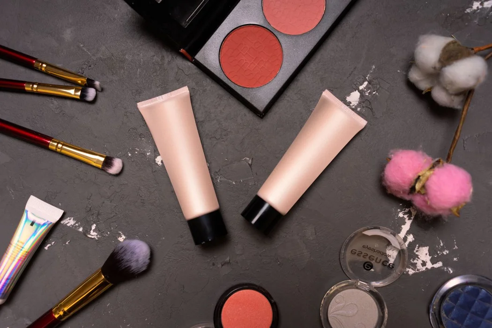
ОБРАЗНе обязательно ждать повода. Просто подарите себе немного внимания.
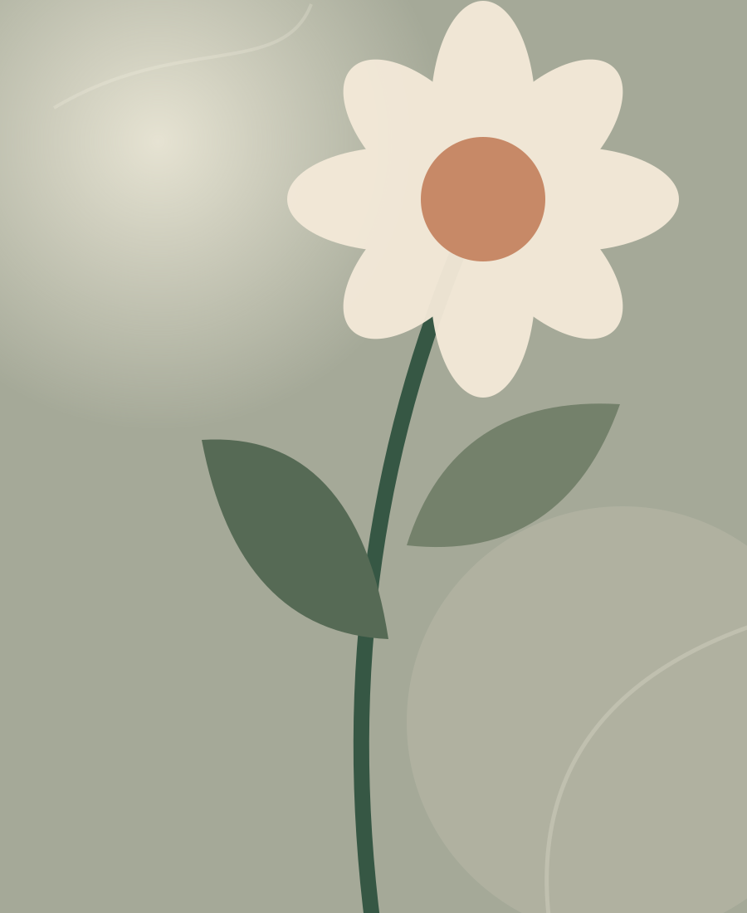
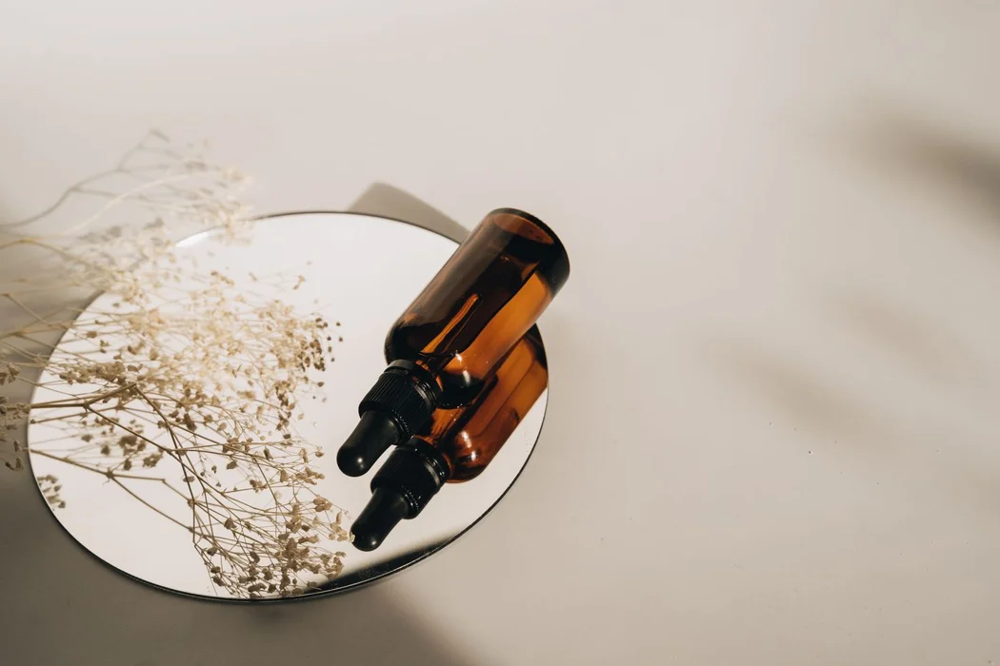
Ритуал уходаФИЛОСОФИЯ LUNÉ
Поэтому мы начинаем с диалога: как вы себя чувствуете, чего хотите и что вам действительно подходит.
ВДОХНОВЕНИЕ
Линия среза, блеск покрытия и нюансы оттенка.
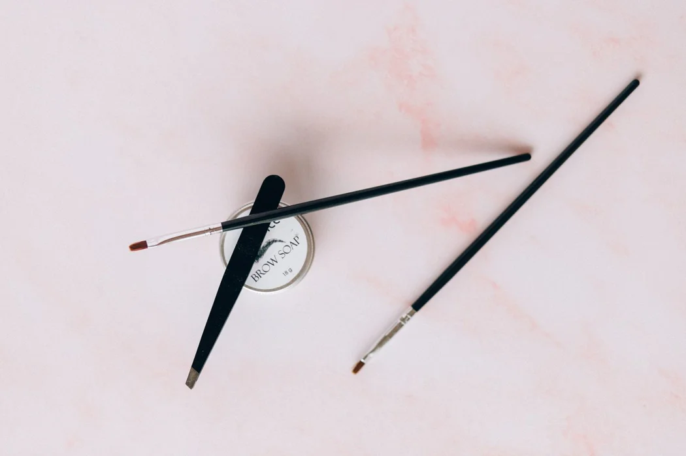
Инструменты для бровейПЕРВЫЙ ВИЗИТ
Принесите пару фотографий, которые вам нравятся. Вместе разберём, что именно хочется повторить: форму, оттенок или отдельную деталь.
ЗАМЕТКА СТИЛИСТА
Если вы сушите волосы без фена или часто собираете их, расскажите об этом перед стрижкой. Так проще выбрать длину и форму, с которыми будет удобно дома.
ПЕРЕД ВИЗИТОМ
В меню указана начальная стоимость каждой процедуры. Если хочется изменить форму, начните со стрижки. Если нравится форма, но хочется освежить оттенок, посмотрите окрашивание.
Сохраните фотографии желаемого оттенка при дневном свете. Вспомните, когда и чем вы красили волосы в последний раз, в том числе дома.
Можно оттолкнуться от любимого украшения или вещи, которую вы часто носите. Сравните два-три оттенка рядом с рукой при дневном свете.
Покажите фотографию наряда и расскажите, при каком свете пройдёт событие. Дневной свет, вспышка и вечернее освещение по-разному передают цвет.